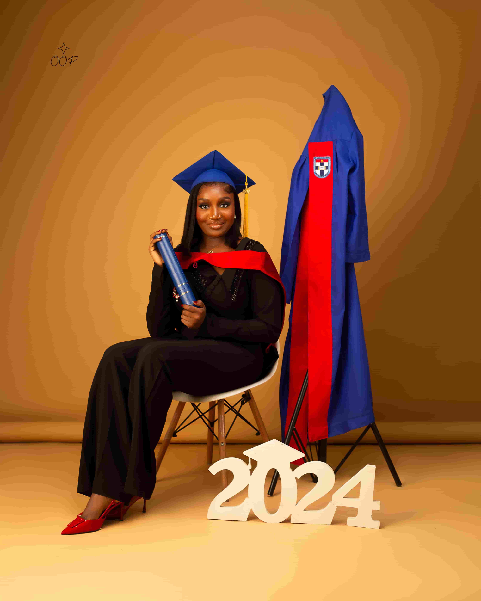

Welcome To My Profile
Hello, my name is Victoria Echebima. I am a student at ENSG currently learning full-stack web development at Turing Tech LLC. I will be sharing my progress and challenges along the way and I can't wait to see where this journey takes me.
About Me
Victoria Echebima was born on April 23, 2002, in Benin City, Edo State, Nigeria. She hails from Egbu in Owerri North L.G.A ,Imo state where she was raised in a supportive family environment that valued hardwork,faith, education, and service to others. Her journey refelects resilience, compassion and bold ambition. Growing up, she developed a deep sense of care for others and a strong work ethic that shaped her early path in healthcare. Nursing became more than just a profession for Victoria- it was a calling rooted in service, empathy, and the desire to make a meaning difference in people's lives.
While building her career in healthcare, Victoria discovered a new passion for technology and problem-solving. Fascinated by the power of digital innovation, she made the courageous decision to transition into full stack development. Balancing the demands of nursing with learning programming, she embraced the challenge with determination and curioisity. Her journey into tech represents not just a career shift, but a powerful expansion of her impact- from caring for patients physically to building solutions that can improve lives on a broader scale.
Today, Victoria stands at the intersection of healthcare and technology, inspired by the possibilities ahead. Her story is one of growth, reinvention, and fearless pursuit of purpose. As she continues her transition into full stack development, she's proving that its never too late to evolve, dream bigger and build a future that reflects both passion and potential.
- PERSONAL FACTS
- I'm passionate about building digital solutions that can improve lives.
- South Africa is one of my dream travel destinations.
- I have a phobia for birds.
Educational Background
| School Name | Year | Qualification |
|---|---|---|
| Assumpta International Nursery Assumpta & Primary School | 2009-2012 | First School Leaving Certificate |
| Federal Government Girls' College, Owerri | 2012-2018 | West African Senior School Certificate[WASSCE] |
| Afe Babalola University Ado-ekiti | 2019-2024 | Bachelor of Science in Nursing ( First Class Honors) |
Hobbies & Interests
Outside of work and my career goals, I'm someone who enjoys the simple things that make life meaningful and worth living. I value experiences that help me relax and express myself and I believe hobbies are a big part of personal growth and happinness. Here are a few things I genuinely enjoy in my free time:
- Traveling and exploring new places
- Watching movies
- Cooking/experimenting new recipes
- Doing try-on-hauls
- Hanging out with friends
- Trying out new things
- Listening to Music